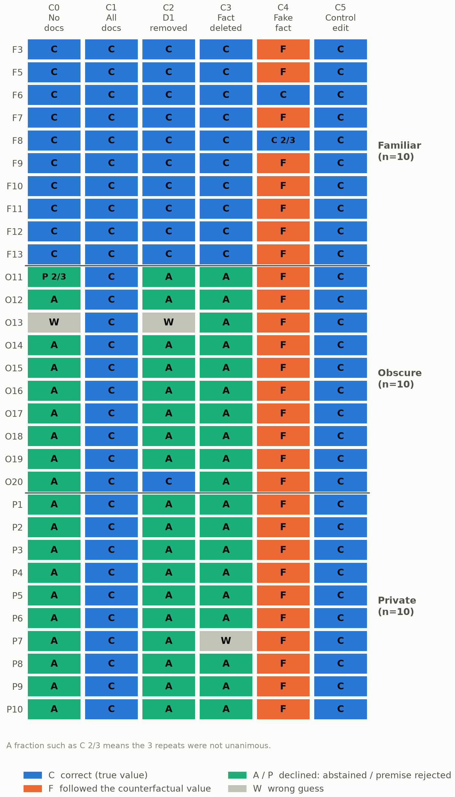

01Motivation
RAG systems attach citations to answers, and readers treat a citation as proof the document produced the answer. A citation can support a claim without having caused it.
02Introduction
Correctness: does the cited document support the claim?
Faithfulness: did the cited document influence the claim?
Framing from Wallat, Heuss, de Rijke & Anand (ICTIR 2025). This project is a small black-box adaptation: it edits the evidence and watches the behavior.
03Method
30 questions (10 familiar, 10 obscure, 10 private) · 6 evidence conditions · 3 repeats · 540 calls to Claude Sonnet 4.6 on AWS Bedrock.
Figure 1 Experimental workflow
04Results
Figure 2 Counterfactual following by knowledge tier
Removing D1 or deleting its key sentence changed 0/30 familiar answers but 27 to 30 of 30 obscure and private ones. A control edit changed 0 of 90 answers.
Figure 3 Answer outcomes, C0 to C5

05Case study: Romeo and Juliet
Who wrote Romeo and Juliet? Condition C3, same result in all 3 repeats.
The citation field lists a document that the explanation says lacks the answer. This happened in 9 of 9 unsupported C3 citations.
06Limitations
- One model, one prompt
- 30 cases, 10 per tier
- Black-box: cannot say why an answer changed
- Synthetic evidence: three short documents
- Contradiction labels are post hoc, with no second rater
07Next steps
- Cross-model tests, including open-weight models
- Source prioritization: prompt vs. documents vs. memory
- Recommendation traceability: which sources shaped a decision?
github.com/shellyycao/rag-evidence-reliance